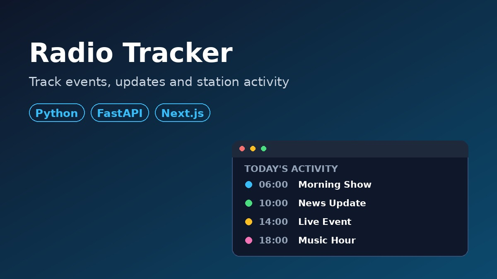
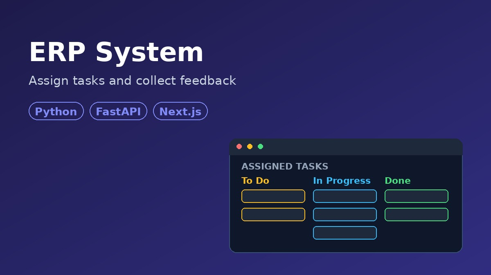
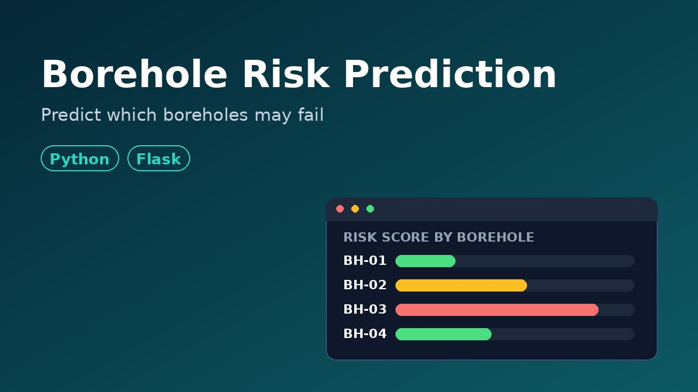

My Projects
Here are some of the software projects I have worked on. They show my experience in software development, web technologies, backend development, data management and problem solving.

Radio Tracker
Radio Tracker is a system designed to help a radio station track events, manage updates and monitor activities within the station.
Problem Solved: It organises radio station activities, events and updates in one system, making information easier to manage and track.
Technologies: Python, FastAPI and Next.js
GitHub Repository
ERP System
The ERP system assigns work to users and allows users to give feedback on their assigned tasks.
Problem Solved: It helps organisations distribute tasks, monitor assigned work and receive feedback from users in an organised way.
Technologies: Python, FastAPI and Next.js
GitHub Repository
Borehole Risk Prediction System
This system uses a risk score to predict which boreholes are more likely to fail.
Problem Solved: It helps identify boreholes at higher risk of failure, supporting better monitoring and maintenance decisions.
Technologies: Python and Flask
GitHub RepositoryWant to see more? Visit my main profile: github.com/YOUR-USERNAME